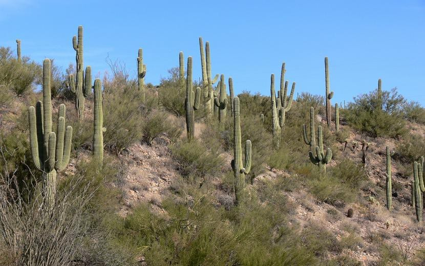

üå≥ 1. Selvas tropicales
Flora:
Árboles altos como la ceiba, el caucho, el palo rosa.
Lianas, orquídeas, helechos, bromelias.
Vegetación densa y estratificada (capas: emergente, dosel, sotobosque, suelo).
Fauna:
Jaguares, monos, tapires, ranas venenosas.
Tucanes, guacamayos, colibríes.
Insectos como mariposas, escarabajos y hormigas.
üåæ 2. Sabanas
Flora:
Pastos altos (gramíneas como la hierba elefante).
Árboles dispersos: acacias, baobabs.
Fauna:
Mamíferos herbívoros: cebras, antílopes, elefantes, jirafas.
Depredadores: leones, leopardos, hienas.
Aves carroñeras como buitres y marabús.
☀️ 3. Desiertos cálidos
Flora:
Cactus (como el saguaro), arbustos espinosos, yucas.
Plantas xerófitas (adaptadas a la sequía).

Fauna:
Reptiles: serpientes, lagartos.
Mamíferos pequeños: zorros del desierto, roedores.
Insectos: escorpiones, escarabajos.
Aves: búhos, halcones, avestruces (en África).
üåø 4. Bosques mediterráneos
Flora:
Matorrales, encinas, alcornoques, pinos piñoneros.
Arbustos aromáticos: lavanda, romero, tomillo.
Fauna:
Mamíferos: jabalíes, zorros, linces ibéricos.
Reptiles: lagartos, culebras.
Aves: águilas, búhos, perdices.
üçÇ 5. Bosques caducifolios (templados)
Flora:
Robles, hayas, arces, castaños.
Arbustos, helechos, musgos.
Fauna:
Ciervos, zorros, osos, ardillas.
Aves migratorias como patos y gansos.
Insectos como mariposas, abejas y escarabajos.
üåæ 6. Estepas
Flora:
Hierbas bajas, pastos como la estepa rusa o la pampa argentina.
Arbustos dispersos.
Fauna:
Mamíferos: antílopes, zorros, liebres.
Aves: halcones, perdices, avutardas.
Insectos: grillos, saltamontes.
üå≤ 7. Taiga (bosque boreal)
Flora:
Coníferas: pinos, abetos, alerces, abedules.
Musgos y líquenes.
Fauna:
Alces, osos pardos, lobos, linces.
Aves: búhos, halcones, urogallos.
Insectos: mosquitos abundantes en verano.
❄️ 8. Tundra
Flora:
Musgos, líquenes, gramíneas, arbustos enanos.
Plantas de ciclo corto adaptadas al frío.
Fauna:
Mamíferos: renos (caribús), zorros árticos, osos polares, liebres árticas.
Aves migratorias: gansos, charranes árticos.
Insectos: mosquitos, moscas negras (en verano).